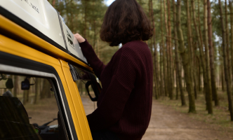

Real-time itineraries powered by location Ai

Popular
Cities

Local
Insights

Amazing
Guides

Hundreds of guides
New high-qualiity guaides added each week
Vetted local experts
The largest network of local guides worldwide
Learn More